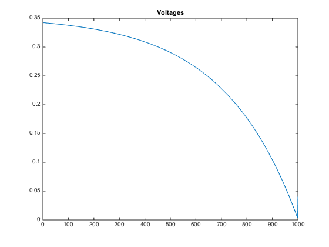
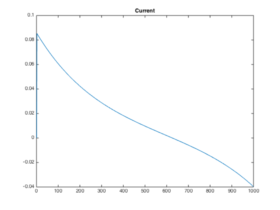
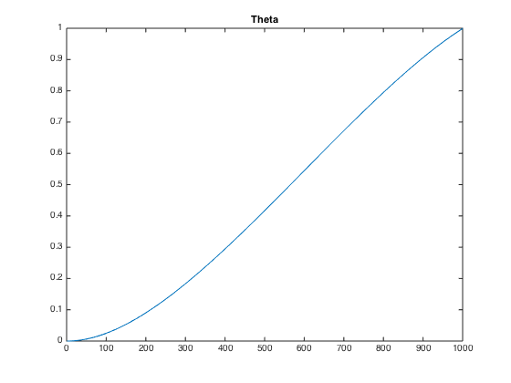

Contents
D
clear; close all;
J = 3e-6;
b = 3e-6;
K = 0.02;
R = 4;
L = 2e-6;
h= 0.0001;
A = [0 1 0 ; 0 -b/J K/J; 0 -K/L -R/L]
B = [0;0;1/L]
C = [1 0 0]
D = 0;
Ad = expm(h*A)
M = expm(h*[A eye(3); zeros(3,6)]);
Bd = M(1:3,4:6)*B
Cd = C
Dd = 0;
A =
1.0e+06 *
0 0.0000 0
0 -0.0000 0.0067
0 -0.0100 -2.0000
B =
0
0
500000
C =
1 0 0
Ad =
1.0000 0.0001 0.0000
0 0.9966 0.0033
0 -0.0050 -0.0000
Bd =
0.0000
0.1656
0.2492
Cd =
1 0 0
E
xdes(1) = 1 is obvious because we need to reach point theta=1. The velocity at which to approach the point and the current at which to approach the point were a result of some experimentation. Because the problem did not specify the complete parameters for xdes I found the velocity and current which would result in the smallest input.
xdes = [1;8.0808; -0.0303]; % Create controlability matrix Ctrl = zeros(3,1000); for i = 1:1000 Ctrl(:,i) = Ad^(i-1)*Bd; end % Least norms inputReversed = Ctrl'*inv(Ctrl*Ctrl')*xdes; input = flipud(inputReversed); Js = norm(input)^2; % Computation of the currents and theta's x = zeros(3,1000); for i = 2:1000 x(:,i) = Ad*x(:,i-1)+Bd*input(i-1); end figure; plot(input); title('Voltages'); figure; plot(x(3,:)); title('Current'); figure; plot(x(1,:)); title('Theta'); disp(['The minimum norm of the input voltages is: ' num2str(Js)]);
The minimum norm of the input voltages is: 72.946  